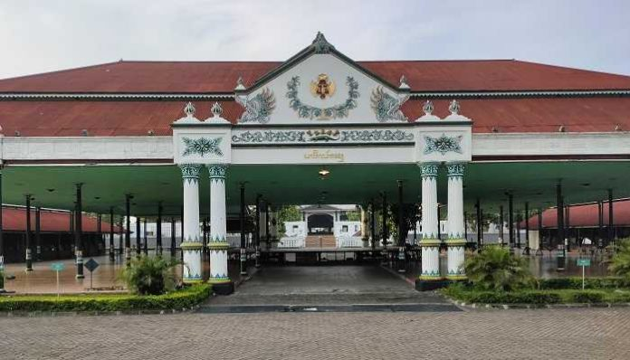

Keraton Yogyakarta

Keraton Yogyakarta adalah istana resmi Kesultanan Yogyakarta yang terletak di Kota Yogyakarta. Secara resmi, Kesultanan sudah menjadi bagian dari Republik Indonesia.
Tapi bangunan keraton ini masih berfungsi sebagai rumah sultan dan yang masih menjalankan tradisi kesultanan hingga saat ini. Sebagian kompleks keraton berguna untuk menyimpan berbagai koleksi milik kesultanan. Seperti berbagai pemberian dari bangsawan Eropa, replika pusaka dan gamelan.
Dari segi arsitekturnya, keraton ini merupakan contoh arsitektur istana khas Jawa yang terbaik, punya balairung-balairung mewah dan paviliun yang luas.